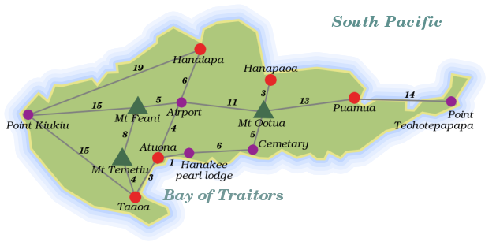
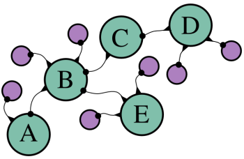
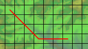

W tym rozdziale nie wprowadzam żadnych nowych pojęć ściśle dotyczących języka JavaScript. Pokażę Ci natomiast, jak rozwiązać dwa problemy oraz przedstawię kilka ciekawych algorytmów i technik. Jeśli Cię to nie interesuje, możesz spokojnie pominąć ten rozdział.
Oto pierwszy z dwóch problemów. Spójrz na poniższą mapę. Widać na niej niewielką tropikalną wyspę o nazwie Hiva Oa, która leży na Oceanie Spokojnym.

Szare linie oznaczają drogi, a znajdujące się obok nich numery informują, jaka jest długość tych dróg. Wyobraź sobie, że potrzebujesz programu znajdującego najkrótszą drogę między dwoma punktami na Hiva Oa. Jak się do tego zabrać? Pomyśl o tym przez chwilę.
Hej. Nie uciekaj do następnego rozdziału, tylko naprawdę spróbuj wymyślić jakieś sposoby na rozwiązanie tego zadania i zastanów się, jakie problemy możesz przy tym napotkać. Czytając techniczną książkę bardzo łatwo jest tylko rzucić okiem na tekst, pokiwać głową z uznaniem i od razu zapomnieć, co się przeczytało. Jeśli jednak naprawdę wysilisz się, aby rozwiązać problem, stanie się on Twoim problemem i jego rozwiązanie będzie Ci bliższe.
Pierwszym aspektem tej kwestii jest reprezentacja danych. Informacje przedstawione na obrazku dla komputera są mało przydatne. Moglibyśmy spróbować napisać program wydobywający informacje z mapy, ale byłoby to bardzo skomplikowane zadanie. Gdybyśmy mieli do zinterpretowania 20 tysięcy takich map, to pewnie byśmy napisali taki program, ale w tym przypadku zinterpretujemy mapę sami i zdobyte informacje przedstawimy w bardziej zrozumiały dla komputera sposób.
Co program powinien wiedzieć? Musi mieć możliwość sprawdzania, które miejsca są ze sobą połączone i jaką długość mają łączące je drogi. Miejsca i drogi na tej wyspie tworzą tzw. graf (jest to pojęcie matematyczne). Grafy można przechowywać na wiele sposobów. Jednym z najprostszych z nich jest utworzenie tablicy obiektów drogowych zawierających własności określające nazwy punktów końcowych i długość…
Jednak program szukając drogi bardzo często będzie potrzebował listy wszystkich dróg zaczynających się w określonym miejscu, podobnie jak osoba stojąca na rozdrożu i szukająca drogowskazu „Hanaiapa: 19km, Mount Feani: 15km”. Byłoby fajnie, gdyby dało się to zrobić łatwo i szybko.
Mając taką reprezentację, jak powyższa za każdym razem, gdy potrzebujemy takiej „drogowskazowej” listy, musimy przeglądać całą listę dróg, aby wybrać odpowiednie. Lepszym rozwiązaniem byłoby zapisanie tej listy bezpośrednio. Możemy np. użyć obiektu wiążącego nazwy miejsc z listami drogowskazów:
Mając taki obiekt, aby znaleźć drogi z Point Kiukiu, wystarczy zajrzeć do roads["Point Kiukiu"].
Jednak ta reprezentacja zawiera duplikaty informacji: droga między A i B jest zaznaczona zarówno w A jak i B. Już pierwsza wersja wymagała sporo pisania, a ta wymaga jeszcze więcej.
Na szczęście możemy wykorzystać umiejętność komputera do wykonywania powtarzalnych czynności. Możemy określić drogi raz i wygenerować odpowiednią strukturę danych za pomocą komputera. Zaczniemy od zainicjowania pustego obiektu o nazwie roads i napisania funkcji makeRoad:
varroads = {};
functionmakeRoad(from, to, length) {
functionaddRoad(from, to) {
if (!(from in roads))
roads[from] = [];
roads[from].push({to: to, distance: length});
}
addRoad(from, to);
addRoad(to, from);
}
Elegancko, prawda? Zwróć uwagę, że w funkcji wewnętrznej addRoad użyte zostały parametry o takich samych nazwach (from i to), jak w funkcji zewnętrznej. Nie spowoduje to konfliktów, ponieważ wewnątrz funkcji addRoad nazwy te odnoszą się do parametrów funkcji addRoad, a poza nią — do do parametrów funkcji makeRoad.
Instrukcja if w funkcji addRoad sprawdza czy istnieje tablica miejsc związanych z lokalizacją określoną w from. Jeśli nie ma, dodaje pustą tablicę. Dzięki temu w następnym wierszu można przyjąć, że taka tablica istnieje i bezpiecznie wstawić do niej nową drogę.
W powyższym opisie łańcuch "Point Kiukiu" nadal występuje trzy razy po kolei. Moglibyśmy nasz opis jeszcze bardziej skrócić, gdybyśmy zezwolili na określanie kilku dróg w jednym wierszu.
Napisz funkcję o nazwie makeRoads pobierającą dowolną nieparzystą liczbę argumentów. Pierwszy argument jest zawsze punktem początkowym dróg, a każda para argumentów znajdująca się za nim określa punkt końcowy i długość drogi.
Nie duplikuj kodu funkcji makeRoad, tylko spraw, aby funkcja makeRoads wywoływała makeRoad.
[pokaż rozwiązanie]
×
functionmakeRoads(start) {
for (vari = 1; i < arguments.length; i += 2)
makeRoad(start, arguments[i], arguments[i + 1]);
}
Funkcja ta ma jeden nazwany parametr o nazwie start, a pozostałe pobiera z quasi-tablicy arguments. Zmienna i ma początkową wartość 1, ponieważ musi pominąć pierwszy parametr. Przypomnę też, że zapis i += 2 jest skróconą formą konstrukcji i = i + 2.
Definiując kilka wygodnych operacji udało się nam znacznie skrócić nasz opis informacji o drogach. Można powiedzieć, że zwięźle wyraziliśmy te informacje poprzez rozszerzenie słownika. Zdefiniowanie „małego języka” jak ten jest często bardzo przydatną techniką — jeśli kiedykolwiek będziesz musiał wielokrotnie wpisywać ten sam kod, postaraj się opracować słownik, który pozwoli Ci to skrócić.
Wpisywanie niepotrzebnego kodu jest nie tylko żmudne, ale i łatwo przy tym popełnić błąd, ponieważ przy wykonywaniu czynności niewymagających myślenia ludzie często popełniają błędy. Ponadto wielokrotnie powtarzający się kod trudno jest modyfikować, ponieważ jeśli jakaś struktura powtarza się w kodzie setki razy, trzeba wprowadzić zmiany w setkach miejsc.
Jeśli wykonałeś wszystkie wcześniejsze fragmenty kodu, powinieneś teraz mieć zmienną o nazwie roads zawierającą wszystkie drogi na wyspie. Gdy będziemy potrzebować dróg zaczynających się w wybranym miejscu, wystarczy, że napiszemy roads[place]. Jeżeli jednak ktoś popełni błąd przy wpisywaniu nazwy miejsca, co jest całkiem możliwe biorąc pod uwagę, jak one wyglądają, zamiast spodziewanej tablicy otrzyma wartość undefined i wystąpią różne dziwne błędy. Dlatego napiszemy funkcję, która będzie pobierała tablice dróg i krzyczała na nas, gdy podamy nieznaną nazwę miejsca:
functionroadsFrom(place) {
varfound = roads[place];
if (found == undefined)
thrownewError("Nie znaleziono miejsca o nazwie '" + place + "'.");
elsereturnfound;
}
show(roadsFrom("Puamua"));
Oto pierwsza próba napisania algorytmu wyszukiwania drogi, tzw. metoda hazardzisty (ang. gambler’s method):
Na każdym rozgałęzieniu dróg hazardzista rzuca kostką, aby zdecydować, w którą stronę pójść. Jeśli wyjdzie mu, że powinien wrócić tam, skąd przyszedł, to również to zrobi. W końcu dotrze w miejsce docelowe, ponieważ wszystkie miejsca na wyspie są ze sobą połączone.
Najmniej zrozumiały wiersz kodu w tym przykładzie to zapewne ten zawierający instrukcję Math.random. Funkcja ta zwraca pseudolosową liczbę1 z przedziału 0-1. Wywołaj ją kilka razy w konsoli, a w większości przypadków za każdym razem otrzymasz inną liczbę. Funkcja randomInteger mnoży tę liczbę przez otrzymany argument i zaokrągla wynik w dół za pomocą funkcji Math.floor. Dzięki temu instrukcja randomInteger(3) może zwrócić liczby 0, 1 oraz 2.
Metoda hazardzisty jest dobra dla tych, którzy brzydzą się uporządkowaną strukturą i nie lubią planować oraz ciągle szukają przygód. My jednak mieliśmy napisać program znajdujący najkrótszą drogę między dwoma miejscami, a więc musimy bardziej się postarać.
Bardzo proste podejście do rozwiązania tego problemu nosi nazwę „generuj i sprawdzaj”. Polega ono na:
wygenerowaniu wszystkich możliwych tras,
i wybraniu z otrzymanego zbioru najkrótszej trasy łączącej punkt początkowy z końcowym.
Realizacja drugiego kroku jest łatwa. Natomiast pierwszy krok może sprawiać problemy. Jeśli dopuści się trasy z kołami, to będzie nieskończona liczba tras. Oczywiście trasy z kołami nie mogą być najkrótsze dokądkolwiek, a dodatkowo można odrzucić trasy nie zaczynające się w punkcie początkowym. Dla małego grafu, jak Hiva Oa powinno być możliwe wygenerowanie wszystkich niecyklicznych (wolnych od kół) tras zaczynających się w określonym punkcie.
Wcześniej jednak będziemy potrzebować pewnych nowych narzędzi. Pierwszym z nich jest funkcja o nazwie member służąca do sprawdzania, czy wybrany element znajduje się w tablicy. Trasa będzie przechowywana jako tablica nazw i docierając w nowe miejsce algorytm będzie wywoływał funkcję member, aby sprawdzić czy już w tym miejscu był. Może to wyglądać następująco:
Teraz jednak przeglądana będzie cała tablica, nawet jeśli wartość zostanie znaleziona natychmiast na pierwszej pozycji. Co za marnotrawstwo. W pętli for można zakończyć iterację za pomocą instrukcji break, ale w pętli forEach tak się nie da, ponieważ treść pętli jest funkcją, a instrukcja break nie służy do wychodzenia z funkcji. Jednym z możliwych rozwiązań jest dostosowanie forEach, aby rozpoznawała określony typ wyjątków jako sygnał do przerwania.
varBreak = {toString: function() {return"Break";}};
functionforEach(array, action) {
try {
for (vari = 0; i < array.length; i++)
action(array[i]);
}
catch (exception) {
if (exception != Break)
throwexception;
}
}
Teraz gdy funkcja action zgłosi wyjątek Break, funkcja forEach go przechwyci i przerwie iterację. Obiekt przechowywany w zmiennej Break jest używany wyłącznie w celach porównawczych. Własność toString dodałem mu po to, aby ułatwić zorientowanie się, co za dziwną wartość otrzymaliśmy, gdy jakimś cudem wyjątek Break pojawi się poza forEach.
Możliwość wyjścia z pętli forEach może być bardzo przydatna, ale w przypadku funkcji member wynik jest raczej nieładny, ponieważ trzeba zapisać wynik, a następnie go zwrócić. Możemy dodać jeszcze jeden rodzaj wyjątku, Return, z własnością value i zwracać tę wartość w forEach, gdy taki wyjątek zostanie zgłoszony, ale to by było bardzo przypadkowe i nieeleganckie rozwiązanie. Tak naprawdę potrzebujemy nowej funkcji wyższego rzędu o nazwie any (lub czasami some). Oto jej implementacja:
Funkcja any przegląda elementy tablicy od lewej i wykonuje na nich funkcję testową. Gdy funkcja testowa zwróci wartość oznaczającą prawdę, funkcja any zwraca tę wartość. Jeśli wartość oznaczająca prawdę nie zostanie znaleziona, następuje zwrot wartości false. Wywołanie any(test, array) jest mniej więcej równoważne z wyrażeniem test(array[0]) || test(array[1]) ||… itd.
Podobnie jak operator && ma uzupełnienie w postaci operatora ||, tak funkcja any ma uzupełnienie w postaci funkcji every:
functionevery(test, array) {
for (vari = 0; i < array.length; i++) {
varfound = test(array[i]);
if (!found)
returnfound;
}
returntrue;
}
show(every(partial(op["!="], 0), [1, 2, -1]));
Kolejna funkcja, jakiej będziemy potrzebować to flatten. Będzie pobierała tablicę tablic i wstawiała elementy tych tablic do jednej dużej tablicy.
functionflatten(arrays) {
varresult = [];
forEach(arrays, function (array) {
forEach(array, function (element){result.push(element);});
});
returnresult;
}
To samo można by było zrobić przy użyciu metody concat i jakiegoś rodzaju funkcji reduce, ale takie rozwiązanie byłoby mniej wydajne. Podobnie jak wielokrotne łączenie łańcuchów jest wolniejsze od umieszczenia fragmentów w tablicy i wywołanie funkcji join, także wielokrotne łączenie tablic powoduje powstanie niepotrzebnych pośrednich wartości tablicowych.
Ćwiczenie 7.2
Przed rozpoczęciem generowania dróg potrzebujemy jeszcze jednej funkcji wyższego rzędu. Jest to funkcja filter. Podobnie jak map funkcja ta jako argumenty pobiera funkcję oraz tablicę i tworzy nową tablicę, tylko zamiast zapisywać w tej nowej tablicy wyniki wykonania funkcji z argumentu na tablicy z argumentu, zwraca tablicę zawierającą tylko te wartości ze starej tablicy, dla których funkcja z argumentu zwróciła wartość oznaczającą prawdę. Poniżej znajduje się kod implementacji tej funkcji.
Jeśli wynik tego zastosowania funkcji filter zaskoczył Cię, pamiętaj że argument podany do funkcji partial jest używany jako pierwszy argument funkcji, a więc zostaje użyty po lewej stronie operatora >.)
Wyobraź sobie, jak mógłby wyglądać algorytm generowania tras ― zaczynałby działanie od miejsca początkowego i generował trasy dla każdej drogi wychodzącej z tego miejsca. Na końcu każdej z tych dróg generowałby kolejne trasy. Nie podążałby tylko jedną drogą, ale rozgałęziałby się. Z tego powodu naturalnym sposobem na jego realizację jest rekurencja.
Ta funkcja zwraca tablicę obiektów tras, z których każdy zawiera tablicę miejsc, przez które dana trasa przechodzi oraz długość. Funkcja findRoutes rekurencyjnie kontynuuje trasę zwracając tablicę zawierającą każde możliwe rozszerzenie tej trasy. Gdy koniec trasy jest miejscem, do którego chcemy dotrzeć, zwraca tę trasę, ponieważ kontynuowanie poza to miejsce byłoby bezcelowe. Jeśli jest to inne miejsce, musimy kontynuować. Najtrudniejszy do rozszyfrowania jest wiersz kodu zawierający wywołania funkcji flatten/map/filter. Można go odczytać tak: „Weź wszystkie drogi wychodzące z bieżącej lokalizacji, odrzuć te, które prowadzą do już odwiedzonych przez tę trasę miejsc. Kontynuuj podążanie każdą z tych dróg, aby otrzymać tablicę ukończonych tras dla każdej z nich, a następnie umieść te wszystkie trasy w jednej wielkiej tablicy, która zostanie zwrócona”.
W tym wierszu dużo się dzieje. Dlatego właśnie pomocne są dobre abstrakcje: dzięki nim można wyrażać skomplikowane działania bez potrzeby pisania całych ekranów kodu.
Czy ta funkcja nie jest nieskończoną rekurencją, biorąc pod uwagę, że ciągle wywołuje samą siebie (poprzez funkcję continueRoute)? Nie, w pewnym momencie wszystkie wychodzące drogi dojdą do miejsc, przez które trasa już przeszła i wynikiem funkcji filter będzie pusta tablica. Wynikiem mapowania pustej tablicy będzie pusta tablica, której spłaszczenie (flatten) również zwróci pustą tablicę. A więc wywołanie funkcji findRoutes na ślepym zaułku spowoduje powstanie pustej tablicy, która oznacza, że „nie ma możliwości kontynuowania tej trasy”.
Zwróć uwagę, że miejsca są dołączane do tras za pomocą metody concat, a nie push. Metoda concat tworzy nową tablicę, podczas gdy push modyfikuje istniejącą. Jako że funkcja może z jednej częściowej trasy rozgałęzić się na kilka tras, nie możemy modyfikować tablicy reprezentującej oryginalną trasę, ponieważ tablica ta jest potrzebna kilka razy.
Ćwiczenie 7.3
Mając wszystkie możliwe trasy możemy spróbować znaleźć najkrótszą. Napisz funkcję o nazwie shortestRoute, która popdobnie jak possibleRoutes, jako argumenty pobiera nazwy punktów początkowego i końcowego. Niech zwraca jeden obiekt trasy typu tworzonego przez funkcję possibleRoutes.
Sztuka w „minimalizowaniu” i „maksymalizowaniu” algorytmów polega na tym, aby niczego nie zepsuć, gdy otrzyma się pustą tablicę. W tym przypadku wiemy, że każde dwa miejsca łączy przynajmniej jedna droga, a więc możemy ten problem zignorować. Ale byłoby to nieprofesjonalne. Co się stanie, gdy droga z Puamua do Mount Ootua, która jest stroma i błotnista, zostanie zmieciona z powierzchni przez lawinę błotną? Byłoby wstyd, gdyby miało to unieruchomić naszą funkcję i dlatego gdy żadne trasy nie zostaną znalezione, zwracamy null.
Poniżej przedstawione jest funkcyjne podejście z abstrakcją wszystkiego, co się dało:
Niestety ta wersja jest trzy razy dłuższa od poprzedniej. W programach, w których trzeba coś zminimalizować dobrym pomysłem jest napisanie ogólnego algorytmu, aby można go było użyć wielokrotnie. W większości przypadków pierwsza wersja powinna być wystarczająco dobra.
Zwróć jednak uwagę na funkcję getProperty, która jest często przydatna przy programowaniu funkcyjnym z użyciem obiektów.
Sprawdźmy, jaką trasę nasz algorytm znajdzie między Point Kiukiu i Point Teohotepapapa…
Dla takiej małej wyspy, jak Hiva Oa wygenerowanie wszystkich możliwych tras nie wymaga dużo pracy. Jeśli jednak spróbujesz to samo zrobić dla szczegółowej mapy np. Belgii, to zajmie Ci to niesłychanie dużo czasu i pamięci komputerowej. A jednak zapewne nie raz widziałeś internetowe narzędzia do planowania podróży. Są one w stanie wskazać mniej więcej najlepszą trasę w gigantycznej sieci dróg w ciągu zaledwie kilku sekund. Jak to robią?
Jeśli uważnie czytałeś, to mogłeś zauważyć, że nie trzeba generować wszystkich tras do samego końca. Jeśli zaczniemy porównywać trasy podczas ich budowania, możemy uniknąć tworzenia tego wielkiego zbioru tras i po znalezieniu pierwszej trasy prowadzącej do celu możemy zaniechać badania tras, które są dłuższe od już znalezionej.
Aby to sprawdzić, użyjemy jako mapy siatki o wymiarach 20 na 20:
Jest to mapa topograficzna górzystego obszaru. Żółte punkty to szczyty, a niebieskie to doliny. Obszar jest podzielony na prostokąty o rozmiarze 100 metrów. Mamy do dyspozycji funkcję o nazwie heightAt, która zwraca wysokość w metrach dowolnego prostokąta na mapie, przy czym prostokąty są reprezentowane jako obiekty z własnościami x i y.
Chcemy przejść przez ten obszar pieszo rozpoczynając wędrówkę w lewym górnym rogu, a kończąc w prawym dolnym. Do siatki można podejść jak do grafu. Każdy prostokąt jest węzłem połączonym z prostokątami, które go otaczają.
Nie lubimy marnować energii i dlatego chcielibyśmy znaleźć jak najłatwiejszą trasę. Wchodzenie pod górę jest o wiele trudniejsze niż schodzenie w dół, a schodzenie w dół jest trudniejsze niż marsz po poziomym podłożu2. Ta funkcja oblicza liczbę „metrów ważonych” między dwoma przylegającymi do siebie prostokątami. Wynik ten określa jak bardzo się zmęczymy przechodząc z jednego do drugiego prostokąta. Wędrówka pod górę liczy się jako dwa razy cięższa od schodzenia w dół.
Zwróć uwagę na obliczenia flatDistance. Jeśli dwa punkty znajdują się w tym samym wierszu lub tej samej kolumnie, to znaczy, że znajdują się obok siebie i odległość między nimi wynosi sto metrów. W przeciwnym razie można przyjąć, że prostokąty sąsiadują po przekątnej, a odległość po przekątnej między dwoma prostokątami o takim rozmiarze wynosi sto razy pierwiastek kwadratowy z dwóch, czyli w przybliżeniu 141. Funkcja ta nie może być wywoływana dla kwadratów, które się ze sobą nie stykają. (Mogłaby to dokładnie sprawdzać, ale jest zbyt leniwa.)
Punkty na mapie są reprezentowane przez obiekty zawierające własności x i y. Poniżej znajdują się trzy funkcje przydatne w pracy z takimi obiektami:
Aby znaleźć trasy na tej mapie, znowu potrzebujemy funkcji do tworzenia „drogowskazów” czyli list kierunków, w których można pójść z określonego miejsca. Napisz funkcję o nazwie possibleDirections pobierającą jako argument obiekt punktu i zwracającą tablicę pobliskich punktów. Możemy przechodzić tylko do sąsiadujących punktów, zarówno na wprost jak i po ukosie, a więc każdy kwadrat może mieć maksymalnie ośmiu sąsiadów. Uważaj, aby nie zwracać kwadratów leżących poza mapą. Dla nas w tym przypadku krawędź mapy oznacza koniec świata.
Zmienną mapSize utworzyłem tylko po to, aby nie musieć wpisywać 20 dwa razy. Gdybyśmy za jakiś czas chcieli użyć tej funkcji na innej mapie, jej kod wyglądałby niezgrabnie z tymi wszystkimi 20, które trzeba by było pozmieniać. Moglibyśmy nawet funkcji mapSize użyć jako argumentu funkcji possibleDirections, dzięki czemu moglibyśmy jej używać na innych mapach bez zmieniania czegokolwiek. Uznałem jednak, że tutaj nie jest to konieczne, a w razie potrzeby zawsze można to zmienić.
Dlaczego w takim razie nie utworzyłem zmiennej do przechowywania wartości 0, która również występuje dwa razy? Przyjmuję założenie, że mapy zawsze zaczynają się od 0 i jest mało prawdopodobne, żeby wartość ta miała się zmienić, a dodatkowa zmienna powoduje tylko więcej bałaganu.
Aby znaleźć trasę na tej mapie i uniknąć wyłączenia programu przez przeglądarkę z powodu zbyt długiego czasu działania, musimy skończyć z amatorskimi rozwiązaniami i zaimplementować poważny algorytm. Problemy tego typu były już wielokrotnie analizowane, czego wynikiem jest wiele różnych rozwiązań (niektóre genialne inne bezużyteczne). Jednym z najpopularniejszych i najbardziej wydajnych jest tzw. A* (wym. A-star). Do końca tego rozdziału będziemy zajmować się implementowaniem algorytmu A* do znajdowania tras na naszej mapie.
Zanim przejdę do objaśniania samego algorytmu, kilka słów o rodzaju problemów, jakie można za jego pomocą rozwiązać. Problem ze znajdowaniem tras w grafach polega na tym, że jeśli graf jest duży, to zawiera bardzo dużo potencjalnych tras. Nasz algorytm znajdowania tras na wyspie Hiva Oa wykazał, że gdy graf jest niewielki, to wystarczy uważać, aby ścieżki nie przechodziły więcej niż raz przez jeden punkt. Jednak w naszej nowej mapie to nie wystarczy.
Sedno problemu tkwi w tym, że jest zbyt wiele możliwości pójścia w niewłaściwym kierunku. Jeśli nie znajdziemy sposobu na pokierowanie naszych poszukiwań ścieżek w kierunku celu, podczas wybierania kierunku kontynuacji poszukiwań będzie istniało większe ryzyko wyboru niewłaściwego kierunku niż szansa na wybór odpowiedniego. Jeśli w ten sposób będziemy generować ścieżki, otrzymamy ich ogromną ilość i nawet jeśli któraś z nich doprowadzi nas do punktu docelowego, to i tak nie będziemy mieć pewności, że będzie to najkrótsza droga.
Dlatego w pierwszej kolejności powinniśmy badać tylko te kierunki, które dają szansę na dojście do celu. W takiej siatce, jak nasza mapa ścieżkę można z grubsza ocenić sprawdzając jej długość i odległość jej końca od punktu docelowego. Sumując długość ścieżki i szacunkową odległość, jaka pozostała do przejścia można ocenić, które ścieżki są obiecujące. Jeśli będziemy najpierw badać obiecujące ścieżki, zmarnujemy mniej czasu na bezużyteczne.
Ale to wciąż za mało. Gdyby nasza mapa przedstawiała idealnie płaski teren, ścieżka wyglądająca na obiecującą prawie zawsze byłaby najlepsza i moglibyśmy użyć powyższej metody do osiągnięcia naszego celu. Ale na naszej mapie mamy wzgórza i zbocza gór blokujące ścieżki, przez co trudno z góry powiedzieć, który kierunek jest najlepszą ścieżką. Przez to nadal jesteśmy zmuszeni badać zbyt dużą liczbę ścieżek.
Aby to zmienić, możemy sprytnie wykorzystać fakt, że zawsze najpierw sprawdzamy najbardziej obiecującą ścieżkę. Gdy dowiemy się, że ścieżka A jest najlepszą drogą do punktu X, możemy to zapamiętać. Gdy później ścieżka B również dojdzie do punktu X, będziemy wiedzieć, że to nie jest najlepsza droga i nie będziemy musieli dalej jej badać. W ten sposób można zaoszczędzić programowi konieczności tworzenia wielu niepotrzebnych ścieżek.
Zasada działania interesującego nas algorytmu jest następująca…
Są dwie informacje, które należy cały czas śledzić. Pierwsza z nich nazywa się listą otwartą (ang. open list) i zawiera częściowe trasy, które trzeba jeszcze zbadać. Każda trasa ma punktację obliczoną poprzez zsumowanie jej długości z szacowaną odległością od celu. Szacunek zawsze musi być optymistyczny, tzn. nigdy nie należy przeszacowywać odległości. Druga informacja to zbiór węzłów, które widzieliśmy z najkrótszymi częściowymi ścieżkami, po których do nich dotarliśmy. Zbiór ten nazwiemy listą osiągniętych celów (ang. reached list). Zaczynamy od dodania do listy otwartej trasy zawierającej tylko węzeł początkowy i zapisania go na liście osiągniętych celów.
Następnie, dopóki są węzły na liście otwartej, pobieramy węzeł o najniższej (najlepszej) punktacji i znajdujemy drogi kontynuacji (wywołując funkcję possibleDirections). Dla każdego zwróconego węzła tworzymy nową trasę dodając go do oryginalnej trasy i dostosowując jej długość za pomocą funkcji weightedDistance. Punkt końcowy każdej z tych nowych tras jest następnie szukany na liście osiągniętych celów.
Jeśli węzła nie ma jeszcze na tej liście, oznacza to że jeszcze nie mieliśmy z nim do czynienia i dodajemy nową trasę do listy otwartej oraz zapisujemy to na liście osiągniętych celów. Jeśli widzieliśmy węzeł wcześniej, porównujemy punktację nowej trasy z punktacją trasy na liście osiągniętych celów. Jeśli nowa trasa jest krótsza, zastępujemy nią istniejącą trasę. W przeciwnym razie odrzucamy nową trasę, ponieważ znamy już lepszą drogę do tego miejsca.
Czynności te powtarzamy aż trasa pobrana z listy otwartej będzie kończyć się w węźle docelowym, co oznacza, że znaleźliśmy trasę, albo aż lista otwarta zostanie wyczerpana, co będzie oznaczać, że nie ma drogi do tego miejsca. Na naszej mapie nie ma miejsc nie do przejścia, a więc zawsze znajdzie się trasa.
Skąd wiadomo, że pierwsza znaleziona pełna trasa pobrana z listy otwartej jest najkrótsza? Wiemy to dzięki temu, że do zbadania zawsze wybieramy tylko trasy o najniższej punktacji. Punktacja trasy składa się z jej długości plus optymistycznego szacunku pozostałej długości. Oznacza to, że jeśli trasa ma najniższą punktację na liście otwartej, jest najlepszą drogą do swojego bieżącego punktu końcowego — nie ma możliwości, aby inna trasa później znalazła lepszą drogę do tego samego punktu, ponieważ gdyby było to możliwe, miałaby niższą punktację.
Nie przejmuj się, jeśli to wszystko wydaje Ci się zagmatwane. W zrozumieniu takich algorytmów, jak ten bardzo pomaga skojarzenie ich z czymś, co się już wcześniej widziało. Ma się wówczas punkt odniesienia. Początkujący programiście są pozbawieni takiego punktu i dlatego trudno jest im się połapać. Po prostu uświadom sobie, że rozważania przedstawione w tym rozdziale dotyczą zaawansowanych zagadnień. Przeczytaj go w całości, a potem wróć do niego po przestudiowaniu reszty książki, jeśli będziesz mieć ochotę na małe wyzwanie.
Obawiam się, że w jednym aspekcie algorytmu znowu będę musiał skorzystać z magicznych sztuczek. Lista otwarta musi być w stanie pomieścić dużą liczbę tras oraz szybko znajdować wśród nich trasy o najniższej punktacji. Przechowywanie ich w normalny sposób i przeszukiwanie tablicy byłoby o wiele za wolne. Dlatego dam Ci do dyspozycji strukturę danych o nazwie kopiec binarny. Kopce binarne tworzy się przy użyciu słowa new, podobnie jak obiekty Date, podając im jako argument funkcję służącą do „punktowania” swoich elementów. Powstały obiekt ma metody push i pop, podobnie jak tablice, z tym że pop zawsze zwraca element o najniższej punktacji, zamiast elementu, który został dodany jako ostatni.
W dodatku 2 opisałem implementację tej struktury danych. Warto przeczytać. Najlepiej zrobić to po lekturze rozdziału 8.
Potrzeba wyciśnięcia maksimum wydajności ma jeszcze inny efekt. W algorytmie dotyczącym wyspy Hiva Oa do przechowywania tras używano tablic lokalizacji, które podczas przedłużania kopiowano przy użyciu metody concat. Tym razem nie możemy pozwolić sobie na kopiowanie tablic, ponieważ liczba tras będzie o wiele większa. Zamiast tego do przechowywania tras będziemy używać „łańcuchów” obiektów. Każdy obiekt w łańcuchu ma pewne własności, jak punkt na mapie i długość trasy do tego miejsca, a także własność wskazującą na poprzedni obiekt w łańcuchu. Wygląda to mniej więcej tak:

Zielone koła to istotne obiekty, a linie reprezentują własności ― końcówka z kropką wskazuje wartość własności. Obiekt A jest początkiem tej trasy. Obiekt B służy do budowy nowej trasy, która jest kontynuowana z punktu A. Ma własność, którą nazwiemy from, wskazującą rasę, na której bazuje. Jeśli później będziemy chcieli odtworzyć trasę, będziemy mogli pójść po tych własnościach, aby znaleźć wszystkie punkty, przez które trasa ta przechodziła. Zwróć uwagę, że punkt B należy do dwóch tras, z których jedna kończy się w punkcie D, a druga w E. Gdy tras jest dużo, można w ten sposób zaoszczędzić dużo miejsca — każda nowa trasa wymaga tylko jednego nowego obiektu, ponieważ pozostałe dzieli z innymi trasami, które rozpoczęły się w taki sam sposób.
Ćwiczenie 7.5
Napisz funkcję o nazwie estimatedDistance optymistycznie szacującą odległość między dwoma punktami. Może nie brać pod uwagę danych dotyczących wysokości, czyli traktować mapę jako płaski teren. Pamiętaj, że poruszać możemy się tylko na wprost i po skosie oraz, że odległość na ukos między dwoma kwadratami wynosi 141.
Te dziwne wzory służą do rozłożenia ścieżki na część prostą i skośną. Spójrz na poniższą przykładową ścieżkę.

Ścieżka ta ma 6 kwadratów szerokości i 3 kwadraty wysokości, a więc wykonujemy 6 - 3 = 3 prostych ruchów i 3 skośne.
Moglibyśmy odległość między dwoma punktami obliczać przy użyciu funkcji implementującej twierdzenie Pitagorasa. Potrzebujemy optymistycznego szacunku, a przyjęcie założenia, że można iść prosto do celu na pewno jest optymistyczne. Jednak im szacunek jest bliższy rzeczywistej odległości, tym mniej bezużytecznych ścieżek program musi sprawdzić.
Ćwiczenie 7.6
Do przechowywania listy otwartej użyjemy kopca binarnego. A jaka struktura danych byłaby dobra dla listy osiągniętych celów? Będziemy w niej wyszukiwać trasy na podstawie par współrzędnych x, y. Najlepiej żeby to wyszukiwanie było szybkie. Napisz trzy funkcje, makeReachedList, storeReached oraz findReached. Pierwsza niech tworzy Twoją strukturę danych, druga niech pobiera listę osiągniętych celów, punkt oraz trasę i zapisuje w tej strukturze trasę, a trzecia niech pobiera listę celów osiągniętych oraz punkt i pobiera trasę albo zwraca wartość undefined oznaczającą, że dla danego punktu nie została znaleziona żadna trasa.
[pokaż rozwiązanie]
×
Jednym z dobrych pomysłów może być użycie obiektu zawierającego obiekty. Jedna ze współrzędnych punktów, np. x, jest używana jako nazwa własności dla zewnętrznego obiektu, a druga, y, dla obiektu wewnętrznego. To wymaga jednak prowadzenia zapisów, ponieważ czasami szukany obiekt wewnętrzny jeszcze nie będzie istniał.
Definiowanie typu struktury danych poprzez dostarczenie zbioru funkcji do tworzenia jej egzemplarzy i manipulowania nimi to bardzo przydatna technika. Umożliwia to oddzielenie kodu korzystającego z tej struktury od szczegółów implementacyjnych samej tej struktury. Zwróć uwagę, że bez względu na to, która z powyższych dwóch implementacji zostanie użyta, kod korzystający z listy celów osiągniętych działa dokładnie tak samo. Dla niego nie ma znaczenia, jakiego rodzaju obiekty są używane, dopóki otrzymuje takie wyniki, jakich potrzebuje.
Bardziej szczegółowo na ten temat piszę w rozdziale 8, w którym nauczysz się tworzyć typy obiektowe, takie jak BinaryHeap, które tworzy się przy użyciu słowa kluczowego new i mają metody służące do manipulowania nimi.
W końcu możemy napisać funkcję znajdującą ścieżki:
Najpierw tworzone są potrzebne struktury danych — lista otwarta i lista osiągniętych celów. routeScore to funkcja punktująca przekazywana do kopca binarnego. Zwróć uwagę, że zapisuje swój wynik w obiekcie trasy, aby uniknąć konieczności jego wielokrotnego obliczania.
Funkcja pomocnicza addOpenRoute dodaje nową trasę do list otwartej i osiągniętych celów. Zostaje natychmiast użyta do dodania początku trasy. Zauważ, że obiekty tras zawsze mają własności point, która zawiera punkt będący końcem trasy, i length, która zawiera bieżącą długość trasy. Trasy o długości większej niż jeden kwadrat mają też własność from, wskazującą poprzedni kwadrat.
Pętla while, zgodnie z opisem algorytmu, pobiera z listy otwartej trasę o najniższej punktacji i sprawdza, czy doprowadzi nas ona do celu. Jeśli nie, musimy kontynuować przedłużając ją. Tym zajmuje się kod forEach. Szuka tego nowego punktu na liście osiągniętych celów. Jeśli go tam nie znajdzie lub znaleziony węzeł ma większą długość niż nowa trasa, tworzony jest nowy obiekt trasy, który zostaje dodany do list otwartej i osiągniętych celów, a istniejąca trasa (jeśli jest) zostaje usunięta z listy otwartej.
A co jeśli trasy w known nie ma na liście otwartej? Musi być, ponieważ trasy z listy otwartej są usuwane tylko wtedy, gdy zostaje odkryte, że stanowią najbardziej optymalną drogę do celu. Jeśli spróbujemy usunąć z kopca binarnego wartość, której w nim nie ma, kopiec zgłosi wyjątek, a więc jeśli moje rozumowanie jest niepoprawne, podczas wykonywania funkcji zapewne zobaczymy wyjątek.
Gdy kod staje się na tyle skomplikowany, że zaczynasz mieć wątpliwości, co do niektórych jego części, dobrze jest dodać kilka testów zgłaszających wyjątki, aby wiedzieć, co jest nie tak. Dzięki temu ma się pewność, że nie „prześlizgnie” się żaden błąd, a gdy wystąpi usterka, będzie ją można od razu naprawić.
Zwróć uwagę, że mimo iż w algorytmie tym nie użyto rekurencji, to i tak przeglądane są wszystkie odgałęzienia. Lista otwarta pełni podobną rolę, jak stos wywołań funkcji w wersji z rekurencją rozwiązującej problem wyspy Hiva Oa, tzn. prowadzi rejestr ścieżek, które jeszcze trzeba zbadać. Każdy rekurencyjny algorytm można zapisać w sposób nierekurencyjny używając struktury danych do przechowywania „rzeczy, które jeszcze trzeba zrobić”.
Pora wypróbować nasz program:
varroute = findRoute(point(0, 0), point(19, 19));
Jeśli wykonałeś wszystkie poprzednie fragmenty kodu i nie spowodowałeś w żadnym z nich błędu, powyższe wywołanie powinno zwrócić obiekt trasy (może to chwilę potrwać). Obiekt ten jest mało czytelny. Można to zmienić przy użyciu funkcji showRoute wyświetlającej trasę na mapie, jeśli konsola będzie wystarczająco duża.
showRoute(route);
Do funkcji showRoute można także przekazywać kilka tras, co może być przydatne np. przy planowaniu wycieczki krajoznawczej, która musi zawierać piękny widok o współrzędnych 11, 17.
Różne wersje algorytmu znajdowania optymalnej trasy na grafie mogą być zastosowane do różnych problemów, które wcale nie muszą być związane z szukaniem fizycznych dróg. Na przykład program, którego zadaniem jest upakowanie jak największej liczby klocków w ograniczonej przestrzeni może badać różne „trasy” otrzymywane poprzez umieszczenie określonego klocka w określonym miejscu. Ścieżki kończące się zbyt małą ilością miejsca dla ostatnich klocków są ślepymi zaułkami, a ścieżki, w których mieszczą się wszystkie klocki są rozwiązaniami.
Przypisy
Komputery to maszyny deterministyczne: zawsze reagują w ten sam sposób na dane wejściowe, przez co nie mogą generować rzeczywiście losowych danych. Dlatego musimy polegać na szeregach liczb, które wyglądają na losowe, a w rzeczywistości są wynikiem skomplikowanych deterministycznych obliczeń.